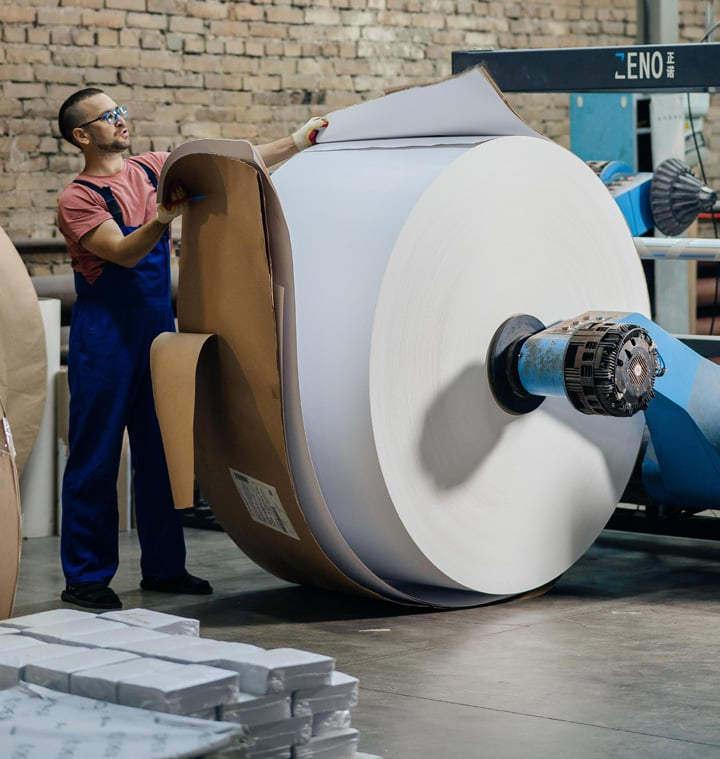
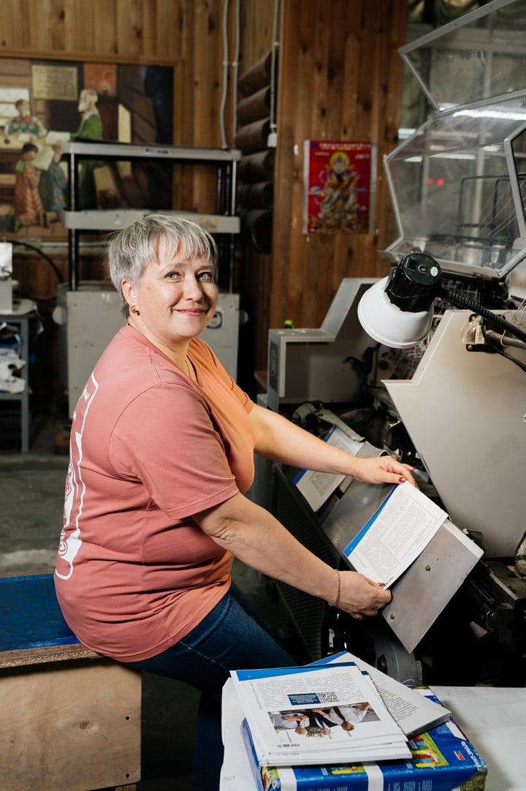

«Лазурь» на Южном Урале: как типография из Режа знакомится с бизнесом Челябинска
 Андрей Голендухин (крайний справа) и Надежда Манькова
(вторая справа) на встрече в компании «ГлавОбедСервис»
Андрей Голендухин (крайний справа) и Надежда Манькова
(вторая справа) на встрече в компании «ГлавОбедСервис»
О типографии «Лазурь» из Режа написала «Комсомольская правда» — Челябинск». В рамках программы издания по возрождению промышленной кооперации директор «Лазури» Андрей Голендухин и ведущий специалист Надежда Манькова отправились в деловую миссию по одиннадцати предприятиям Челябинска и области — рассказать о своих возможностях бизнесу, который о типографии пока знает не всё.
От чёрно-белых газет до корпоративных книг
Типография «Лазурь» была основана в 1997 году. Её создатель — потомственный полиграфист Татьяна Деева, которая выросла в типографской среде и решила продолжить семейное дело. Начинали с чёрно-белых газет, а сегодня «Лазурь» печатает всё: от газет до упаковки для продуктов миллионными тиражами, от рекламных каталогов до сувенирных ручек и календарей.
— Это семейное предприятие, — рассказывает Андрей Голендухин. — Мы одни из первых в Екатеринбурге и Свердловской области начали печатать цветные газеты и журналы. Сегодня основной профиль типографии — издательская продукция: журналы, периодические издания, упаковка, книги. Особое место занимают корпоративные книги — не художественные, а те, что предприятия заказывают к юбилейным датам.
С 2016 года типография освоила ещё одно направление — упаковку из картона. На предприятии есть всё оборудование: от приёмных погрузчиков картона в рулонах до упаковки готовой продукции и её хранения на складе. «Лазурь» работает напрямую с заводами-производителями картона: ЦБК КАМА, ЦБК Трейдинг (Добруш, Белоруссия), Пермский ЦБК.

На складе типографии есть большой запас ходового картонаЗа 29 лет «Лазурь» завоевала широкую популярность среди заказчиков — в типографии печатаются многие полноцветные издания Свердловской, Тюменской, Челябинской, Пермской и других областей. Полный полиграфический цикл, высочайшее качество печати, современное оборудование, высокий профессионализм кадров, короткие сроки исполнения заказа — типография работает круглосуточно, без выходных, и осуществляет ежедневную доставку заказов. Открыто представительство в Екатеринбурге.
Деловая миссия: знакомство с Челябинском
В рамках программы «Комсомольской правды» — Челябинск» по возрождению промышленной кооперации представители «Лазури» встретились с руководителями одиннадцати предприятий. Каждая встреча была посвящена конкретным потребностям бизнеса — от корпоративных книг до упаковки для замороженных полуфабрикатов.
- МАТИКС
- ГлавОбедСервис
- УралГипроЦентр
- Златоустовская Оружейная Фабрика
- Вкусаторг
- СоюзПищепром
- Челябинский гранитный карьер
- СпецУралМаш
- ТЭКО РУС
- Грани Таганая
- Январь
«ГлавОбедСервис»: упаковка для сотен тысяч порций
Встреча с генеральным директором Владимиром Бакаевым была посвящена упаковке для готовых обедов. Предприятие — крупный игрок на рынке замороженных полуфабрикатов, заказывает тиражи от полумиллиона до миллиона единиц. В «Лазури» рассказали о своих возможностях: прямой контракт с заводами-производителями картона, складской запас 200 тонн ходового картона, готовность держать материал под конкретного заказчика — а также о сувенирном отделе, который работает с продуктами: этикетки на чай, на шоколад, картины художников на сувенирной продукции.
Мы не можем открыть тендер на площадке, потому что это индивидуальный заказ. Нужно, чтобы типография прислала образцы, мы убедились в качестве печати и картона. — «ГлавОбедСервис»
«МАТИКС»: каталоги, ручки и календари
Директор предприятия Михаил Лепешкин пришёл на встречу с конкретными запросами. Компания проектирует и изготавливает металлорежущий инструмент — фрезы, свёрла — и нуждается в качественной полиграфии для презентации продукции: больших каталогах, а также отдельных каталогах по пластинам и по брендам. Кроме того, «МАТИКС» интересуют сувениры — эко-ручки из бумаги или пластиковые, календари, стикеры, блокноты, пакеты.
Интересно, как у вас калькуляция. Я понимаю, что вы давно в этой теме, качество у вас хорошее. — Михаил Лепешкин, директор «МАТИКС»
«Златоустовская Оружейная Фабрика»: каталоги, упаковка и сувениры
Исполнительный директор ЗОФ Елена Кремниева рассказала о потребностях предприятия — одного из ведущих производителей ножей и холодного оружия в России. Фабрика заказывает каталоги большим тиражом — их дарят многочисленным гостям, — а также небольшие буклеты на монопродукт. Обсуждали упаковку: картонные коробки под изделия, бумажные и полиэтиленовые пакеты с вырубной ручкой, картонные футляры для ножей разных форматов. Интересовались календарями и открытками с историей фабрики — в советское время кортики выпускали только здесь.
«УралГипроЦентр»: книга к 25-летию
Генеральный директор Николай Береговенко сразу обозначил интерес: в следующем году компания отмечает 25-летие, и в планах — издать книгу с информацией о компании, специалистах, сведениями о подрядчиках и красивыми фотографиями. В «Лазури» предложили рассмотреть разные форматы — с разной обложкой и переплётом, а также порекомендовали издательства, которые работают с типографией. Кроме книги, заказчика заинтересовали настенные календари, ежедневники и презентационное портфолио.
В следующем году компания отмечает 25-летие. Хотим издать книгу с информацией о компании, специалистах, со сведениями о подрядчиках и красивыми фотографиями. — Николай Береговенко, генеральный директор «УралГипроЦентра»
«Вкусаторг»: ассортиментный журнал для партнёров
Встреча с генеральным директором Нуриманом Хисаметдиновым была посвящена созданию презентационного материала для оптовых партнёров — мини-формата, ассортиментного журнала, в который войдёт линейка готовых блюд и кулинарии.
Будем ждать ваше предложение. — Нуриман Хисаметдинов, генеральный директор «Вкусаторг»

«Лазурь» работает на рынке 29 летПрограмма «КП» — Челябинск» по возрождению промышленной кооперации показала: даже в эпоху цифровых технологий качественная полиграфия остаётся востребованной. Типография «Лазурь» — яркий пример предприятия, которое умеет сочетать традиции и инновации. 29 лет работы, полный цикл, работа без посредников, сувенирное производство — всё это делает её надёжным партнёром для бизнеса любого масштаба.
Планируете полиграфический проект для своего бизнеса?
Связаться с «Лазурью» →